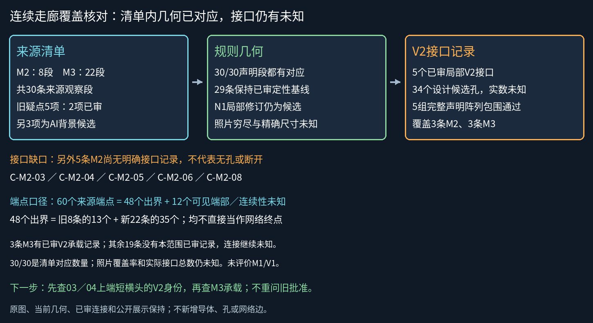
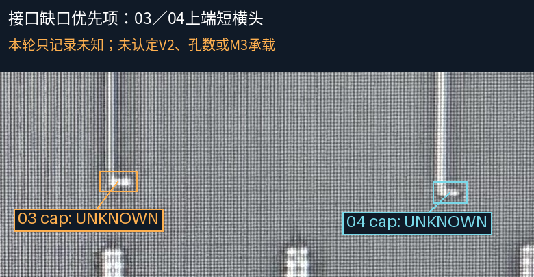

连续走廊：来源清单 → 当前几何 → 接口记录
30/30声明来源段都有几何对应；已审V2为5个。接口实际总数与照片穷尽性未知，不能报告整网完成。48个出界端部中，13个来自旧8条，35个来自新增22条。
覆盖汇总 · 30段映射CSV · M2接口巡查CSV · 60端点CSV · 5条已审接口CSV · 来源绑定
逐项核对（独立坐标，不做照片投影）
规则设计：来源关联不代表精确配准
覆盖总览

8条M2接口巡查的当前接续
巡查记录8/8不等于全部接口已识别。以下5条暂未记录明确接口，不能据此判为无孔／断开：03、04、05、06、08。
| 来源ID | 工作几何ID | 已审V2 | 上层M3 |
|---|
| C-M2-01 | RT-M2-R01 | RT-V2-U1, RT-V2-D1 | RT-M3-UP, RT-M3-DOWN |
| C-M2-02 | RT-M2-R02 | RT-V2-U2, RT-V2-D2 | RT-M3-UP, RT-M3-DOWN |
| C-M2-03 | C-M2-03 | 尚无明确接口记录 | 未知 |
| C-M2-04 | C-M2-04 | 尚无明确接口记录 | 未知 |
| C-M2-05 | C-M2-05 | 尚无明确接口记录 | 未知 |
| C-M2-06 | C-M2-06 | 尚无明确接口记录 | 未知 |
| C-M2-07 | RT-M2-NARROW | N1-V2 | C-M3-L01 |
| C-M2-08 | C-M2-08 | 尚无明确接口记录 | 未知 |
下一步的来源位置（本轮不裁决）

端部与未知
60个来源端点中48个出界、12个为可见端部或连续性未知；48个不是48个电气端口。M3有3段承载已审接口，另外19段没有本范围已审V2记录，不代表无接口，可能在范围外延续。M1/V1不在本次结论内。
旧清单保留5个疑点原文：N1和05/06已有对应范围的人审结论，另外3条弱带为AI不补建处置；三者都不写成人工确认物理不存在。现行结论同时读取来源事实与评估覆盖层。
新几何和端部精确尺寸尚未采用共同GDS；当前5组的34个孔是设计候选，真实数量未知。下一步优先核03/04上端短横头的接口身份，再查承载；本页不新增连接裁决。